1004B12 power unit with manual gearbox - r+r for versions with a/c
- Path
- Procedures > 10 ENGINE UNIT > 1004 ENGINE AND POWER UNIT > 1004B power unit assembly > 1004B12 power unit with manual gearbox - r+r for versions with a/c
- Kind
- repair procedure (removal / refitting; the operation number is the code)
- Applies to
- engines: 1.9 JTD 8V; all production periods
- Interactive page
- https://sloeber94.github.io/elrnDB-fMltpl/en/#/2891348
Applies to: engines: 1.9 JTD 8V; all production periods
 Removing
Removing
 Refitting
Refitting5040A10 Air conditioning refrigerant CIRCUIT - Draining and Refilling
7040A96 facia glove compartment flap (1) lh or rh - r r
5050B32 windscreen wiper arm/s - r+r
7055A18 Windscreen base TRIM - R.R.
1. Disconnect electrical connection (1a), disconnect the electrical connections from injection control unit (1b).
2. Disconnect the relays from the control unit mount.
3. Unscrew bolt (3a) and disconnect earth lead (3b) from the right side pillar.
 | Name | Connector |
|---|---|---|
1a | Engine management ECU |
| Name | Connector |
|---|---|---|
1b | Accelerator pedal potentiometer |
| Name | Connector |
|---|---|---|
3b | Front earth right |
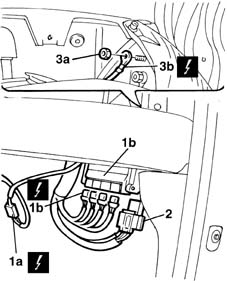
Applies to: engines: 1.9 JTD 8V; all production periods
1. Unscrew retaining nuts (1a) and withdraw engine wiring (1b) from the passenger compartment. Place out of the way in the engine bay.
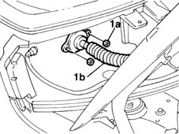
Applies to: engines: 1.9 JTD 8V; all production periods
Place the car on a ramp.
4450B12 front or rear wheels (two) - r+r
1016A10 sound-proofing cover - r + r
1048A10 AIR CLEANER FILTERING ELEMENT - REPLACE
1048A41 sleeve from debimeter to turbocharger - r r
1048B22 air delivery sleeve from heat exchanger to intake manifold - r + r
7055B42 Additional FRONT WHEEL ARCH (one), left or right - R.R.
5550B30 L/H OR R/H HORN (ONE) - R+R
5040A50 pipe from compressor to air conditioner condenser - r+r
1048A12 air cleaner support - r r with air cleaner assembly removed
5040A44 air conditioner dehydrating filter/accumulator - r+r
1048B50 turbo charger intercooler - r + r
5550C30 l/h or r/h front turn signal (one) - r+r
7055B10 LH OR RH REFLECTOR(ONE) ON REAR BUMPERS - R R
1088B32 engine cooling radiator support beam - r r
Position a suitable container for recovering the coolant.
1. Undo the drain plug on the radiator and drain the engine coolant into the container.
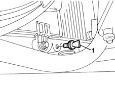
Applies to: engines: 1.9 JTD 8V; all production periods
1. Disconnect electrical connections (1a) and (1b) from the fan.
2. Unscrew the retaining bolts.
3. Disconnect both air conditioning lines from the evaporator.
4. Disconnect pipe (4a) from its fitting on the thermostat and pipe (4b) from the rigid coolant pipe.
5. Undo retaining bolts (5a) and remove radiator - fan - evaporator assembly (5b).
| Name | Connector |
|---|---|---|
1a | Engine electric fan motor |
| Name | Connector |
|---|---|---|
1b | Engine electric fan motor |
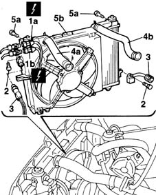
Applies to: engines: 1.9 JTD 8V; all production periods
1. Disconnect the electrical connection for the speedometer.
| Name | Connector |
|---|---|---|
1 | Speedometer sensor |
2. Undo the adjustment nut (2a) and disconnect the release cable (2b) from the lever and from its engagement on the gearbox.
3. Undo the nut (3a) and disconnect the earth lead from the gearbox (3b).
4. Undo nuts (4a) and disconnect battery positive terminal leads (4b).
| Name | Connector |
|---|---|---|
4b | Battery |
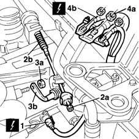
Applies to: engines: 1.9 JTD 8V; all production periods
1. Disconnect the heater/air conditioner assembly water inlet/outlet pipes.
2. Disconnect the brake servo pipe from the vacuum pump.
3. Disconnect the vacuum pipe from the E.G.R. system.
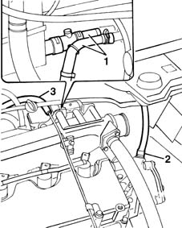
Applies to: engines: 1.9 JTD 8V; all production periods
1. Disconnect the glow plug preheating connection.
| Name | Connector |
|---|---|---|
1 | ABS control unit |
2. Disconnect the electrical connection from the E.G.R. valve.
| Name | Connector |
|---|---|---|
2 | EGR solenoid |
3. Disconnect the fuel lines from the fuel filter.
4. Disconnect the water pipe from its fitting on the cylinder head.
5. Disconnect the water hose from the rigid pipe.
6. Disconnect the electrical connection to the compressor electromagnet coupling.
| Name | Connector |
|---|---|---|
6 | Air conditioning compressor electro-magnet | L20 |
7. Disconnect the fuel pipe from the return manifold.
Use a syringe to draw off the power steering pump fluid from the reservoir.
8. Disconnect the rubber oil delivery hose to the pump from the tank.
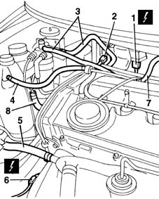
Applies to: engines: 1.9 JTD 8V; all production periods
1. Remove the flexible transmission cable ends.
2. Remove the retaining clips.
3. Withdraw the two gear selection and engagement flexible transmission cables from the mounting bracket.
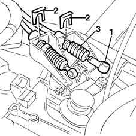
Applies to: engines: 1.9 JTD 8V; all production periods
1008C10 power unit upper reaction link r r
1. Disconnect power steering pump oil lines (1a) and (1b) from the power steering casing by unscrewing bolts (1c) and (1d).
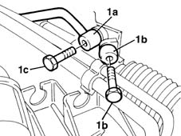
Applies to: engines: 1.9 JTD 8V; all production periods
1. Undo the bolts securing the suspension strut to the damper.
2. Undo the bolts securing the drive shaft to the differential flange and place the drive shaft outside the working area.
Repeat the above operation for the driveshaft on the intermediate shaft side.
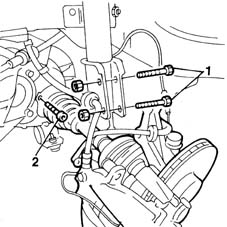
Applies to: engines: 1.9 JTD 8V; all production periods
1076B50 exhaust pipe attachment to engine - r + r
1008B20 power unit intermediate mount flexible block - replace
1008A44 rear rigid mount - r r
Lower the lift.
Position a platform beneath the engine bay.
1. Secure the metal cables (1a) provided to bracket (1b) on the gearbox and mount (1c) on the reaction rod motor.
2. Secure the cables to a hydraulic hoist. Put the cables under tension by raising the hoist slightly.
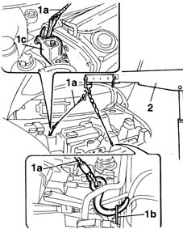
Applies to: engines: 1.9 JTD 8V; all production periods
1. Unscrew bolts (1a) securing the gearbox end flexible block to the body and bolt (1b) securing it to the rigid mount.
2. Remove the flexible block.
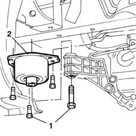
Applies to: engines: 1.9 JTD 8V; all production periods
1. Unscrew the bolts securing the flexible block on the camshaft end to the body and bolts (1b) securing it to the rigid mount.
2. Remove the flexible block.
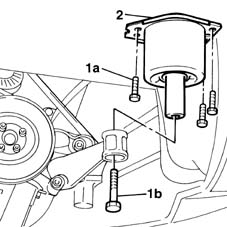
Applies to: engines: 1.9 JTD 8V; all production periods
Lower the power unit slowly onto the underlying platform.
Check that the electrical components, pipes and mechanical parts in the engine bay are not damaged duirng the engine removal operation.
Raise the vehicle slowly and release the power unit from the engine bay.
Applies to: engines: 1.9 JTD 8V; all production periods
Refitting
RemovingPlace the power unit on a platform beneath the vehicle.
Release the engine support cables and lower the lift to the point where the engine can be fitted into the engine bay.
Secure the hydraulic hoist cables to the engine anchorage points.
Raise the engine until the engine mounts are close to their anchorages on the body.
Screw in the bolts securing the camshaft end flexible block to the body and to the rigid mount. Then tighten the fastenings to torque.
 | Fastening | Component | Ø | Value (daNm) |
|---|---|---|---|---|
- | Bolt | FRONT RUBBER MOUNTS | M12 x 1.25 | 8 |
| Fastening | Component | Ø | Value (daNm) |
|---|---|---|---|---|
- | Bolt | FRONT RUBBER MOUNTS | M8 | 3.5 |
Screw in the bolts securing the gearbox end flexible blocks to the body and the rigid mount. Then tighten the fastenings to torque.
| Fastening | Component | Ø | Value (daNm) |
|---|---|---|---|---|
- | Bolt | GEARBOX SIDE RUBBER MOUNT | M12 x 1.25 | 8 |
| Fastening | Component | Ø | Value (daNm) |
|---|---|---|---|---|
- | Bolt | GEARBOX SIDE RUBBER MOUNT | M8 | 3.5 |
Remove the support cables and place the hydraulic hoist outside the working area.
Remove the platform.
1008A44 rear rigid mount - r r
1008B20 power unit intermediate mount flexible block - replace
1076B50 exhaust pipe attachment to engine - r + r
Tighten the bolts securing the shaft to the differential flange to the specified torque.
| Fastening | Component | Ø | Value (daNm) |
|---|---|---|---|---|
- | Bolt | FRONT DRIVE SHAFT COMPLETE WITH JOINTS | M8 | 3 |
Tighten the bolts securing the suspension vertical link to the shock absorber to the specified torque.
| Fastening | Component | Ø | Value (daNm) |
|---|---|---|---|---|
- | Nut | FRONT HUB STEERING KNUCKLE. | M10 | 7 |
Connect the oil pipes to the power steering pump.
1008C10 power unit upper reaction link r r
Fit the two gear selection and engagement flexible transmission cables on the mounting bracket.
Fit the flexible transmission cable ends.
Fit the retaining clips.
Connect the hose carrying oil to the pump to the tank.
Connect the fuel pipe to the return manifold
Connect the electrical connection to the compressor electromagnet coupling.
| Name | Connector |
|---|---|---|
- | Air conditioning compressor electro-magnet | L20 |
Connnect the water hose to the rigid pipe.
Connect the water hose to the fitting on the cylinder head.
Connect the fuel lines to the fuel filter.
Connect the electrical connection to the E.G.R. valve.
| Name | Connector |
|---|---|---|
- | EGR solenoid |
Connect the glow plug preheating connection.
| Name | Connector |
|---|---|---|
- | ABS control unit |
Connect the EGR system vacuum pipe.
Connect the brake servo pipe to the vacuump pump.
Connect the heater/air conditioner unit water inlet and outlet pipes.
Fit the leads to the battery negative terminal and tighten the retaining nuts.
| Name | Connector |
|---|---|---|
- | Battery |
Connect the earth lead to the gearbox and secure by tightening the nut.
Connect the release cable to the lever and the attachment on the gearbox.
Tighten the adjustment nut.
Connect the electrical connection for the speedometer sensor.
| Name | Connector |
|---|---|---|
- | Speedometer sensor |
Fit the radiator - fan - evaporator assembly.
Tighten the radiator - fan - evaporator assembly retaining bolts.
Connect the fan electrical connections.
Connect the water hoses to the thermostat and the rigid coolant pipe.
Tighten the air conditioner fluid pipe retaining bolts.
1088B32 engine cooling radiator support beam - r r
7055B10 LH OR RH REFLECTOR(ONE) ON REAR BUMPERS - R R
5550C30 l/h or r/h front turn signal (one) - r+r
1048B50 turbo charger intercooler - r + r
5040A44 air conditioner dehydrating filter/accumulator - r+r
1048A12 air cleaner support - r r with air cleaner assembly removed
5040A50 pipe from compressor to air conditioner condenser - r+r
5550B30 L/H OR R/H HORN (ONE) - R+R
7055B42 Additional FRONT WHEEL ARCH (one), left or right - R.R.
1048B22 air delivery sleeve from heat exchanger to intake manifold - r + r
1048A41 sleeve from debimeter to turbocharger - r r
1048A10 AIR CLEANER FILTERING ELEMENT - REPLACE
1016A10 sound-proofing cover - r + r
4450B12 front or rear wheels (two) - r+r
Fit the engine wiring into its seat and pull through to the injection control unit.
Connect the electrical connections to the injection control unit.
Fit the relays to the control unit mount.
Tighten the bolts securing the wiring to the bulkhead.
Connect the earth lead to the right side pillar.
| Name | Connector |
|---|---|---|
- | Engine management ECU |
| Name | Connector |
|---|---|---|
- | Accelerator pedal potentiometer |
| Name | Connector |
|---|---|---|
- | Front earth right |
7055A18 Windscreen base TRIM - R.R.
5050B32 windscreen wiper arm/s - r+r
7040A96 facia glove compartment flap (1) lh or rh - r r
5040A10 Air conditioning refrigerant CIRCUIT - Draining and Refilling
Refill the power assisted steering system using appropriate fluid.
Refill the engine coolant system with the required quantity of the specified fluid.
Topics linked from this page (31)
- 1008A44 rear rigid mount - r r
- 1008B20 power unit intermediate mount flexible block - replace
- 1008C10 power unit upper reaction link r r
- 1016A10 sound-proofing cover - r + r
- 1048A10 AIR CLEANER FILTERING ELEMENT - REPLACE
- 1048A12 air cleaner support - r r with air cleaner assembly removed
- 1048A41 sleeve from debimeter to turbocharger - r r
- 1048B22 air delivery sleeve from heat exchanger to intake manifold - r + r
- 1048B50 turbo charger intercooler - r + r
- 1076B50 exhaust pipe attachment to engine - r + r
- 1088B32 engine cooling radiator support beam - r r
- 4450B12 front or rear wheels (two) - r+r
- 5040A10 Air conditioning refrigerant CIRCUIT - Draining and Refilling
- 5040A44 air conditioner dehydrating filter/accumulator - r+r
- 5040A50 pipe from compressor to air conditioner condenser - r+r
- 5050B32 windscreen wiper arm/s - r+r
- 5530B10 battery - r+r
- 5550B30 L/H OR R/H HORN (ONE) - R+R
- 5550C30 l/h or r/h front turn signal (one) - r+r
- 7040A96 facia glove compartment flap (1) lh or rh - r r
- 7055A18 Windscreen base TRIM - R.R.
- 7055B10 LH OR RH REFLECTOR(ONE) ON REAR BUMPERS - R R
- 7055B42 Additional FRONT WHEEL ARCH (one), left or right - R.R.
- A1 Battery
- C11 Front earth right
- K055 Accelerator pedal potentiometer ( FRONT )
- K84 Speedometer sensor
- L30 EGR solenoid
- M10 Engine management ECU
- M50 ABS control unit
- N11 Engine electric fan motor